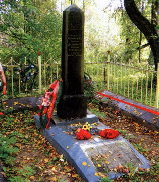

июль - август 2009 года
Увековечена память о герое-разведчике
По представлению Фонда «Жить и Помнить» военным комиссаром г. Ржева, Ржевского, Зубовского и Старицкого районов принято решение о внесении в списки захороненных в братской могиле в деревне Орехово имени сержанта Лиханова Павла Ивановича.
Около месяца тому назад в Фонд обратилась жительница Твери Анна Евгеньевна Губанова, которая разыскивала сведения о месте захоронения своего дяди Лиханова П.И., уроженца села Джида Балеевского района Читинской области. Он погиб в июле 1942 года на территории Калининской области.
В ходе розыска было установлено, что сержант Лиханов П.И. в армию призван Черемховским РВК Читинской области. Был назначен командиром отделения моторазведроты 5 стрелковой дивизии, подразделения которой в июле 1942 г. вели бои на территории Ржевского и Старицкого районов. Из донесения о безвозвратных потерях рядового и младшего начальствующего состава этой дивизии № 0114 от 27 июля 1942 г. мы выяснили: сержант Лиханов П.И. был убит в бою 17 июля 1942 г. у деревни Кравцово Ржевского района, с поля боя не вынесен.
Как сражался в своем последнем бою сержант Лиханов, написал в письме военному комиссару Черемховского района командир роты разведки А.П.Некрасов:
«Товарищ военком! Командование разведроты высылает вам извещение о гибели сержанта Лиханова Павла Ивановича, его фотографии и фотографии жены и ребенка. Просим вручить их его жене и сообщить ей, что ее муж, выполняя боевое задание 17.07.1942 года погиб смертью героя. Будучи тяжело раненым, он и два бойца его отделения бились до последней возможности. Но численно превосходящий противник окружил трех смельчаков.
Бойцы были сражены вражескими пулями. Сержант Лиханов, видя безвыходность положения, бросил в гитлеровцев две гранаты, а третьей подорвал себя. В бою тов. Лиханов уничтожил десять фашистов.
Погибший герой тов. Лиханов представлен к правительственной награде. Мы похоронили его и товарищей в районе дер. Крупцево (название деревни - так в письме). За два дня до боя сержант Лиханов в своем заявлении с просьбой принять его в ряды ВКП(б) писал: «Желаю коммунистом сражаться с ненавистным врагом. Если погибну, считайте меня членом партии Ленина».
Наш адрес: 11 полевая почта 28 ОМТ – рота Некрасова А.П. Этот адрес сообщите жене.
С комприветом, Некрасов».
За этот бой сержант Лиханов П.И. посмертно был награжден орденом Отечественной войны II степени. Но его имени мы не обнаружили ни в одной из Книг Памяти: ни по месту рождения в Читинской, ни по месту призыва, в Иркутской, ни в разделе «Братские могилы» Тверской области, на земле которой он принял свой последний бой.
В 1954 - 1956 годах останки погибших и захороненных в районе деревни Крупцово воинов 5 стрелковой дивизии были перенесены в братскую могилу в деревне Орехово Ржевского района, что подтверждается записью в паспорте воинского захоронения, информацией, полученной от ржевских поисковиков.
Имя сержанта Лиханова П.И нами внесено в электронную Книгу Памяти Тверской области (http://www.history.tver.ru/book/index.html) , в адрес военного комиссара Иркутской области направлено письмо с информацией о месте его захоронения.
НА ФОТО: братская могила в деревне Орехово. В 1954-1956 годах в братскую могилу перенесены останки красноармейцев из населенных пунктов: Алексино, Гущено, Крупцово, Матягино, Терешково. Здесь похоронены 625 человек.

НЕИЗВЕСТНАЯ БИТВА
19 июля 2009 года - 65 лет со дня освобождения Калининской области в ее довоенных границах от немецко-фашистских захватчиков.
Михаил Хетчиков
История боевых действий на территории нашей области уникальна, но многие эпизоды за 65 лет остались неизученными. Фундаментальные научные труды, отражающие специфику военных действий в границах Калининской области, формирующие общее представление о пространственном размахе и результатах боевых действий войсковых и партизанских соединений, отсутствуют. Вследствие этого мало кто знает, что военные действия на территории Калининской области продолжались 3 года и 12 дней. Они начались 7 июля 1941 года, а завершились 19 июля 1944 года. За это время было проведено 9 оборонительных операций, около 45 различного уровня наступательных (стратегических, фронтовых, армейских) операций, в которых принимали участие войска Западного, Северо-Западного, Резервного, Калининского, 1-го и 2-го Прибалтийских фронтов. Пять армий 22-я, 27-я (преобразована в конце 1941 года в 4-ю ударную армию), 29-я, 30-я (преобразованная в 16 апреля 1943 года в 10-ю гвардейскую), 31-я участвовали как в оборонительных, так и в наступательных операциях.
Первыми приняли на себя удар фашистских войск на западных границах нашей области соединения 22-й и 27-й армий. Неоднократные попытки немецких войск окружить и уничтожить эти воинские формирования оказались безуспешными.
Весомый вклад в защиту и освобождение нашей области внесли калининские партизаны и подпольщики, история боевых действий которых по истине уникальна, но она требует дальнейшего исследования. Неоценимую помощь армии оказали труженики тыла Калининской области.
Наиболее яркие примеры стойкости, мужества и массового героизма воинов Красной Армии в первых оборонительных операциях имели место в районе городов Великие Луки, Западная Двина. Эти города не сдавались противнику в течение месяца, однако, история оборонительных операций 1941 года не исследована в должной мере. Ожесточённые сражения имели место на окраинах города Калинин и в непосредственной близости от него. Верхневолжский рубеж от Калинина до Торжка оказался непреодолимой стеной для фашистской 9-й полевой армии и 3-й танковой группы. Здесь они были остановлены в конце октября 1941 года, отсюда началось их изгнание с древней тверской земли.
Наиболее яркой армейской операцией наступательного периода по праву является Торопецко-Холмская (9 января – 6 февраля 1942 г.), завершившаяся освобождением нескольких районов Калининской области от фашистских захватчиков, а также образованием двух больших выступов - осташковско-великолукско-демидовского и ржевско-вяземского.
Уникальной среди наступательных операций является Режицко-Двинская, обобщенная информация о которой предоставляется читателям впервые.
26 июня 1944 года в Генеральный штаб был направлен план
наступательной операции 2-го Прибалтийского фронта, которым предусматривалось разгромить опочкинско-идрицко-себежскую группировку фашистских войск с целью полного освобождения от оккупантов Калининской области. 2 июля Ставка Верховного Главнокомандования утвердила план, внеся в него некоторые коррективы.
Замыслом операции предусматривалось прорвать оборону противника двумя ударными группировками с целью разгрома удерживающих западные районы Калининской области фашистских войск. Планом предусматривалось мощными охватывающими ударами расчленять, окружать и уничтожать вражескую группировку на правом фланге фронта силами 3-й ударной и 10-й гвардейской армий, а на левом - силами 4-й ударной и 22-й армий. Для обеспечения стремительного продвижения в глубину обороны противника был создан резерв фронта в составе 5-го танкового корпуса, фронтовая подвижная группа, а в каждой армии - свои подвижные группы.
Начало Режицко-Двинской наступательной операции Ставка назначила на 12 июля, но операция началась раньше. Почему это произошло?
Дело в том, что в течение трех дней, предшествовавших наступлению наших войск, всеми видами разведки было установлено, что противник готовится отвести свои части на тыловой оборонительный рубеж в ночь с 10 на 11 июля. По всей видимости, он догадывался о предстоящем наступлении и хотел заставить наши войска ударить по пустому месту, чтобы затем нанести контрудар сохраненными силами.
В связи этим было решено начать операцию раньше указанного ставкой срока и не утром, как обычно делалось, а вечером 10 июля. Принимая рискованное решение, командующий фронтом генерал-полковник Ерёменко А.И. считал, что только так он может выполнить поставленную задачу не просто оттеснить противника с территории Калининской области, а нанести ему ощутимые потери.
В 19 часов 10 июля 10-я гвардейская и 3-я ударная армии первыми начали артиллерийскую подготовку, которая продолжалась 30 минут. Затем в атаку перешли главные силы первого эшелона, поддерживаемые авиацией 15-й воздушной армии. Ломая сопротивление врага, части первого эшелона успешно продвигались в глубину обороны противника. В 22 часа (летом в это время еще довольно светло) в прорыв были введены армейские и корпусные подвижные группы. Они начали свое стремительное продвижение в глубь обороны противника, превращая тактический прорыв в оперативный, захватывая важнейшие узлы дорог и переправ, перерезая коммуникации противника, уничтожая его по частям. Бои продолжались всю ночь.